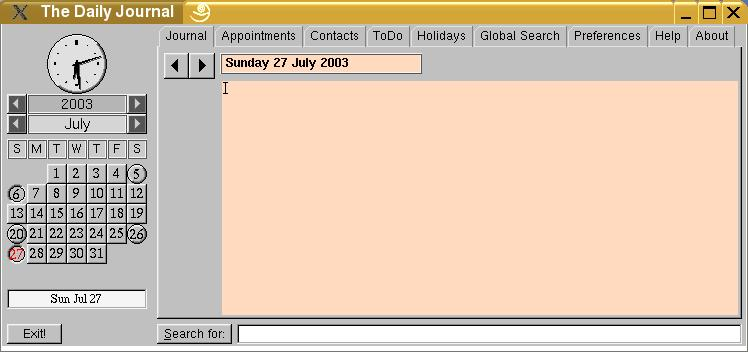
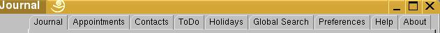

Introduction
The
User Interface
Key
bindings
Storage and data files
Program
limits
Compilation
License
and copying policy
Fltdj is a PIM program. PIM stands for Personal Information Manager - a digital secretary, if you will. Only thing is, you have to do all the typing yourself...
Does it work at all? Well, it works for me, when it is in the
mood. But that is probably because of its sense of obligation, since
I wrote it and, in the process, pulled it out of binary limbo into PC
hell. Your mileage may vary.
Does it do anything useful?
Well, if you are in the habit of keeping daily notes, or a diary, or
a journal of your activities, fltdj can keep them organised
and accessible. It also stores your daily appointments, contact list
and to-do list, and prompts you before upcoming appointments.
While there is no guarantee that there will be future versions, there is every probability of the version number increasing in the future as and when I get the time, and/or if enough people ask.
The main user interface window is in two parts. On the left side is a clock and a calendar, which try to remain the same size however you try to resize the window. You can change the month and year by clicking on the arrows by the side of the Year and Month displays. The nice clock displays the current time so you can, well, see what time it is. There is an "Exit" button conveniently located which you can click on to get rid of the program when you are sufficiently exasperated, or if it has not segfaulted already. See figure below.

Some buttons and smaller windows display little boxes
containing helpful information when the mouse pointer is held
stationary over them. Sometimes they don't, if the program is not
feeling particularly helpful, or if the mouse was thinking of
something else when its cursor landed up on them. These little boxes
are, quaintly, called "tooltips". While some may hold
useful tips, many others may be just plain confusing. What the "tool"
signifies, I don't know. Perhaps it is meant to clarify that,
whatever the tips are, they won't be about the stock-market.
The
current day and date is also always shown. This date is checked six
times an hour by an internal timer and will change the display in ten
minutes (at most) after midnight. If you are in the habit of burning
the midnight oil while writing the Great Daily Novel, you can see
that today has changed to tomorrow and start on tomorrow's , that is
today's novel right away, before it becomes yesterday.
Along
the top on the right is a row of tabs. (see the figure below) . When
the program starts, it displays the licensing and copyright
information under the About tab.
To enter a note for the day,
you click on the Journal tab, and type your thoughts in the blank
area to the right.
If you haven't noticed it already, the tabs
are Journal,
Appointments, Contacts,ToDo
, Holidays, Global
Search, Preferences,Help,
and About.
Read on
for the exciting details of how to use them.

You can store your thoughts for a particular day by clicking on
the appropriate date button on the calendar. The program displays any
previous note, or shows a blank window if there is none, or shows a
quote from the fortune database, if the preferences are set for
that.Your note can be as long as you want (while it's only a note,
you can write and store a novel everyday).
Days associated with
notes are displayed inside a raised circular button, otherwise the
buttons are square.
To retrieve the note for any particular
day, click on the desired date; it is displayed on the right (if the
Journal tab is on the foreground) and you can add to or modify the
text if needed. The date associated with any note is shown above the
note, and the corresponding button on the calendar shows the date in
red.
You can go to the next or previous note (not the
next or previous date) by clicking on the left and right arrow
buttons to the left of the text area.
You can search for a
particular text string by typing it in the box at the bottom. below
the text area, and clicking the "Search:" button. The
program searches for and displays the note in which the string is
found. Repeatedly clicking this button searches for successive
occurrences of the string only in the current month, (this a,
well, feature, shall we say?) and continues to display the note in
which it is found.
The program goes to the note for the day
containing the search text, if it occurs in the current month.
Switching to any other day or tab automatically saves the data.
Switching to any other month updates the notes file.
In order to see or add appointments to your daily schedule, use
the "Appointments" tab.
To bring up the
appointments for any particular day, click on the desired date and
the "Appointments" tab, if this tab is not on the
foreground. They are displayed on the right. Here you can enter
your appointment details in the last row of two colored boxes (at the
bottom).
The first box is for the time, in 24 hour format. Type
only numbers in this field. Don't use any other character to
separate the hours and minutes, such as ":", ".",
or "-". Since this field is used to sort the appointments
in chronological order, it will not accept any other character.
Also
keep in mind that if an appointment is scheduled for more than 2400
hrs, (suppose you typed in 2430 instead of 1430! (we all
make mistakes - see the number of fltdj bug-fix versions
released!)) it is trapped as an error, and the time will be set at
2400 hrs. Similarly for times below 0000 hrs (say, -1430,
though even I wouldn't make this mistake). These are set at
0000hr.
The other box can be used for any other
information. Typically, you can put the name of the person, phone
number, and place of appointment, but any alphanumeric information is
accepted and stored.
Remember to restrict each entry to about 60
characters. There are only 24 appointments allowed in this version. I
don't know of any real reason for this, but if you can think of any,
contact me. But seriously, if anyone feels this number is not
sufficient, let me know and I will increase it in the next version.
After filling in the details, click "Add" to add it
to the appontments. It will be inserted in the correct place within
the list of appointments.
If you want to modify an existing appointment, click the up or
down arrow buttons until it is highlighted in red, and make the
changes in the same boxes, where it will simultaneously appear. Click
"Modify". That's it. If required it will be moved
into the correct position so that the list is in chronological order.
In order to delete an appointment, highlight it using the up or
down arrow buttons and click on "Delete". The list of
appointments will move up to close the gap made by the deleted
appointment.
The current appointment and the total number of appointments for
this day is always displayed in the little box between the "Close"
and "Add" buttons.
You can click on the left and
right arrow buttons to move to the next or previous day with
appointments. Days without an appointment are skipped. If you need to
set appointments for a day which does not have any, you will need to
click on that date button on the calendar.
Fltdj
will alert you ten minutes before any appointment with a discreet
little window that pops up with a beep. It remains onscreen until you
acknowledge its presence by clicking the 'OK' button. Appointment
alerts are issued only when the program is running. If you exit
fltdj, there will be no alerts.
Appointment alerts are
not issued if there are less than 10 minutes to go for a new or
modified appointment! The program assumes that you can
remember an appointment which has been fixed or rescheduled to occur
within the next ten minutes. If that is not the case, the GPL does
not cover short term memory, unfortunately. Actually it covers
nothing, just like a real insurance policy, but your mileage may
vary.
Two non-fatal but annoying bugs have been removed. Users of earlier versions (if there were any!) may remember that on modifying any future appointment, alerts were sounded on both the original time as well as the modified time. We always prefer to err on the safe side. This has been rectified, as promised. We always keep our promises, eventually! Another bug that has been rectified is the alert for appointments which have been deleted!
Normally, the days on the calendar are displayed as square
buttons. Days with a note attached are displayed with a round button.
Days with appointments only (and no note) are displayed with the
square button depressed down. Days having both a note and
appointments are displayed with a round depressed button.
The
appointments data is stored when you switch to any other day and file
is updated when switching to another tab.
Clicking on "Contacts" will display the contacts data.
Type in the name, address and all other details in the larger
area, below the top blank box. Enter carriage-returns wherever needed
to format the data as you like. When you have finished, click "Add"
on the left side of the window.
The first line of the data will
be copied to the top blank box, and it will appear there.
To add more contacts, delete the data and type in whatever is
needed, and again click "Add". This will add the second
record.
You can continue to build up your contact list in this
manner. If you click the small arrow to the left of the top text box,
it will drop down to reveal a list which contains the first lines of
all the contacts you have typed in. You can select any one of them to
see the details.
To modify, alter the text and click "Modify".
To
delete, just click "Delete".
You can search for a particular contact by typing it in the search box at the bottom and clicking the "Search" button. The contact containing that text will be displayed. Successive occurrences will be displayed on clicking the "Find" button again.
Click the "To-Do" to display your list of pending work. Enter your text in the editor.
Select "Holidays" to bring up the list of holidays (if entered earlier), or a blank list if you are creating it for the first time. The interface is similar to that for appointments. Enter the date and month in the first two boxes in the last row, and a description of the holiday or anniversary in the third box. Click the "Add" button to add it to the list. The corresponding date will be colored yellow. Holidays are days of sunny happiness, right?
Continue adding in this manner to build up a list of upto 100 holidays. Look, if you have more holidays than this, you don't need this program anyway.
To delete a holiday use the up and down buttons to highlight and
select it. Click "Delete" to remove it from the list.
The
holiday list is stored in a file as soon as you switch to any other
tab. It will be available the next time fltdj is used. When the mouse
cursor is held stationary over a yellow date, the description of the
holiday will pop up to remind you what the occasion is. The journal
tab also displays the holiday by the side of the day and date near
the top.
Normally, when the Search button is clicked after typing
some text in the box to its right, it displays the next journal entry
(or appointment day, if the Appointments tab is in the
foreground, or the next contact if the Contact tab is visible)
containing the text in the current month. When the Global
Search tab is in the foreground, it displays a list of all the
months and dates that contain the text (either in a note or
appointment) that was typed in the text box. Multiple entries for a
particular month means multiple occurences of the text in that month.
This is another feature, shall we say. I am working on it.
Clicking
on any entry highlights it. It is then possible to open that
particular date by clicking again on the entry. This displays the
Journal tab, or the Appointments tab, as the case may
be, with the journal or appointments for that date.
Font face:Change by dragging the button on the slider. A
sample of how the text will appear is displayed in the small window
beside the sliders.
Font size: Ditto.
Show
fortune when displaying blank notes:When this box is checked,
fltdj will fetch a quotation from the database of the
"fortune" program (if it is installed) when displaying the
note window for a day which does not have any note. This quotation
will become part of the day's noting if you leave the window
as it is without typing anything in it, unless you explicitly erase
it.
No quotation will be displayed if the day already contains
some text. No point in having too much of a good thing, no? No.
You can apply the preferences for the current session by clicking on the "Apply" button.
Save your preferences for later sesions by clicking on the "Save" button.
Click on "Help" to display this information, which is stored in the file named "help.html" in the subdirectory "doc". You can also open it in any other browser (such as Mozilla) which will render the HTML better than the internal browser.
Some of the buttons on the program have keys bound to them, so
that the action that is produced by the clicking of the left mouse
button can be performed via the keyboard.
Some or all of the
following can be used on the Notes, Contacts, ToDo and
Holiday windows:
Alt-a: Add the data
Alt-m: Modify the data
Alt-d: Delete the
data
Alt-s: Search for the text which has been
entered in the box. This displays the next journal entry containing
the search text if the Journal tab is visible. If the
Appointments tab is visible it displays the next day which has
an appointment containing the search text. If the Global Search
tab is visible, it displays all the months containing the
search text. An entry in the list can be highlighted with a
left-click, and then displayed in the Journal tab by clicking
on the "Show" button.
Alt-h: Display the
highlighted entry in the Global Search tab in the Journal
tab.
Alt-y: Go to the previous year.
Alt-Y: Go to
the next year
Alt-m: Go to the previous month
Alt-M:
Go to the next month
Alt-x: Exit the program.
The program stores the notes for each month in a separate file. At
present the names of these files cannot be altered.
The files
are created automatically, as and when required, and are named with
the year and month, in numerals, followed by the extension "tdj".
For example, the notes for December, 2002 will be stored in the file
"2002-12.tdj".
The contact list is stored in the file
"contacts.tdj", and the to-do list is stored in the file
"todo.tdj".
The holidays and anniversaries are stored
in "holiann.tdj". At first I thought of calling
it"annholi", but the present name has a more angelic
connotation to it ...
The preferences are stored in the file
"prefs.tdj".
All the files are in the "hidden"
directory, ~/.fltdj, where the tilde (~) represents your home
directory.
Different users can use the program without their
data getting mixed up, provided the user directories are different.
fltdj checks for the presence of this directory when
opening any data file, and alerts you if it is absent.
In this version:
Number of notes: One for each day,
with no limit on the length of the note. The 1000 character limit of
earlier fltdj versions has been removed. Progress! Well, of
some sort.
Number of appointments: 24 for each day. How
active can you be? One needs time to relax as well.
Number
of contacts: 500, with no limit on the length of the contact
information. The earlier 200 character limit no longer exists. More
progress.
While this is only contact info, you may store a
graphic description of the person, his (her) life history,
where you met him (her), and why he (she) is in the database at
all...
To-do list: No limit. Have you ever encountered
the situation where your work is complete and you can relax?
Number
of holidays and anniversaries: 100. You cannot type anything
except numbers in the date and month fields. The description cannot
be more than 35 characters.
Searching: At present the
search function in the Journal tab spans only the month
currently being displayed. Use the Global Search tab to locate
other months.
If anyone wants more data space, just e-mail me, and I will provide...
The behaviour of the program is undefined if these limits are exceeded. Basically, this means that I have not incorporated any error checks, and that if you lose your data, the GPL protects me from any liability. But seriously, things are expected to improve For example, backups will appear in a future version. All in good time...
-:IMPORTANT:-
The program
does not make backups at present!
It's not yet already compiled?
Very simple, just run "make".
See the README file for details on what else you need to make a
binary.
This program is copyright, (C) 2001 onwards, Kartik Patel.
This
program is free software; you can redistribute it and/or modify it
under the terms of the GNU General Public License as published by the
Free Software Foundation; either version 2 of the License, or (at
your option) any later version. This program is distributed in the
hope that it will be useful, but WITHOUT ANY WARRANTY; without even
the implied warranty of MERCHANTABILITY or FITNESS FOR A PARTICULAR
PURPOSE. See the GNU General Public License for more details. You
should have received a copy of the GNU General Public License along
with this program; if not, write to the Free Software Foundation,
Inc., 675 Mass Ave, Cambridge, MA 02139, USA.
Kartik Patel
https://letapk.wordpress.com